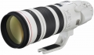

器材
党
全部器材
产品年表
名词百科
榜单
器材库
> 35mm画幅AF变焦镜头 > EF 200-400/4L IS USM EXTENDER 1.4X

佳能
EF 200-400/4L IS USM EXTENDER 1.4X
4.22
综合评分
分类
35mm画幅AF变焦镜头
点评
0 条
图片
0 张
评测
6 篇
该镜头覆盖200-400mm的焦距，通过切换使用内置增倍镜就能进行280-560mm的拍摄，可防止因更换镜头错过快门时机。使用内置增倍镜时还能同时安装另售的增倍镜拍摄。
产品类型
35mm画幅AF变焦镜头
综合评分
4.22分
无忌评测
后来居上 佳能EF200-400/4L 1.4x评测
规格参数
网友点评
(0)
产品图 / 样片
(0)
评测文章
(6)
详细规格
镜头类型
超远摄变焦镜头
发布日期
2013-05-14
厂家推荐价格
1,396,500.00 （日元）
焦距
200mm-400mm
最大光圈
f/4.0
最小光圈
f/32
视角（对角）
10°～5.6°
视角（水平）
7°～3.5°
视角（垂直）
12°～6.17°
镜头结构
25片/20组
低/超低色散镜片
4片
光圈叶片
9片
最近对焦距离
200cm
最大放大倍率
0.15倍
驱动马达
USM（超声波马达）
滤镜口径
52mm
镜头卡口
Canon EF
防抖
是
颜色
白色
尺寸
128×366mm
重量
3620g
该产品暂无存档的网友点评
该产品暂无存档的产品图
评测 / 相关文章
后来居上 佳能EF200-400/4L 1.4x评测
（存档）
［试用］佳能的新崛起 EF200-400/4L 1.4x试用
（存档）
［资讯］佳能EF200-400/4L IS USM 1.4x外观图赏
（存档）
［资讯］EISA 2013-2014年度影音设备大奖
（存档）
［试用］佳能200-400/4 1.4x开箱
（存档）
［资讯］让人垂涎已久的佳能特色镜头一览
（存档）
相关文章
［试用］佳能的新崛起 EF200-400/4L 1.4x试用
（存档）
［试用］后来居上 佳能EF200-400/4L 1.4x评测
（存档）
［资讯］佳能EF200-400/4L IS USM 1.4x外观图赏
（存档）
［资讯］EISA 2013-2014年度影音设备大奖
（存档）
［试用］佳能200-400/4 1.4x开箱
（存档）
［资讯］让人垂涎已久的佳能特色镜头一览
（存档）
［资讯］佳能EF 200-400/4L IS USM 1.4X
（存档）